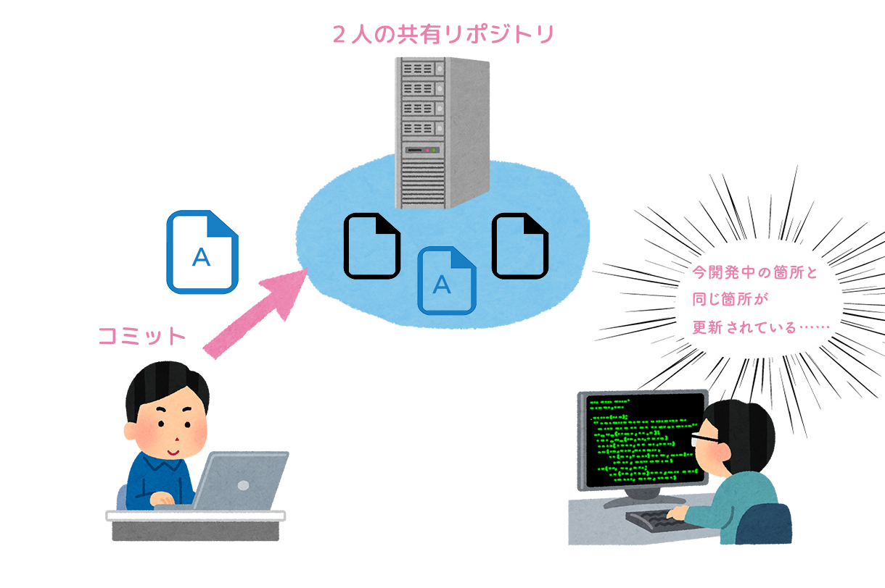
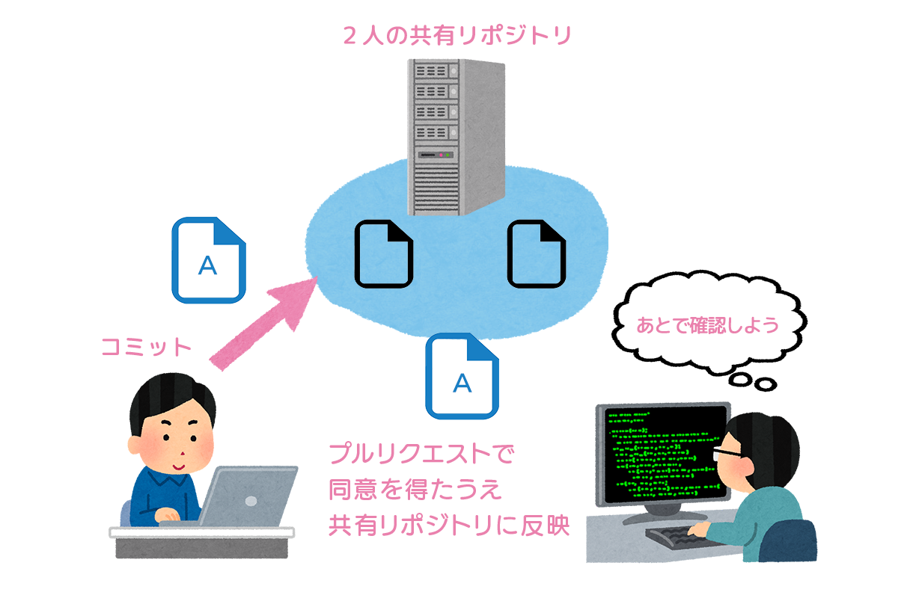

Gitの特徴を簡単にまとめると、次のようになります。
CVSやSubversionでは、いつでも全員が共有するリポジトリに対し修正内容を反映（コミット）します（集中型）。そのため、気をつけないとコミットの際に開発中の不完全なソースコード、実験的なソースコードが共有されてしまう危険性があります。
一方、 分散型のGitであれば、ローカルのPC上でコミットができます。手元でコミットを続けたのち、任意のタイミングでプッシュできます。そのため、開発途中のソースコードがいきなり共有しているメンバー全員に影響を与える心配がありません。
例えるならば、CVSやSubversionのときは公開済みのブログを推敲しなければならなかったものが、Gitになれば非公開の下書き状態で推敲できるようになった、というイメージです。